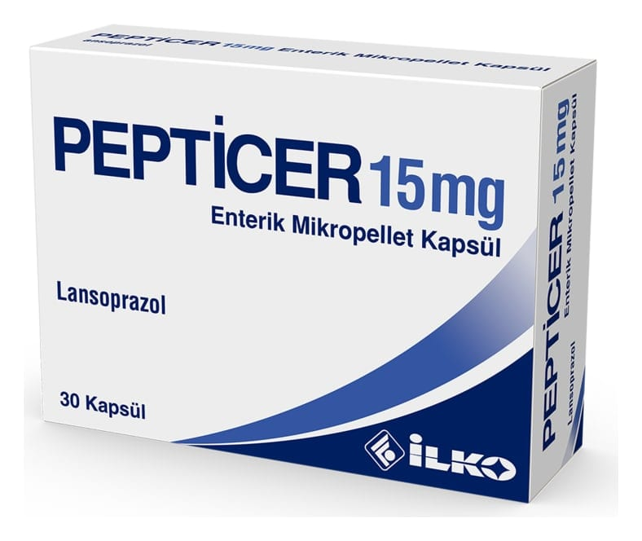

Pepticer 15 mg Enterik Mikropellet Kapsül ,30 Kapsül

Ne için kullanılır
KT · Bölüm 1 PEPTİCER, lansoprazol etkin maddesini içerir. Bir kapsül içinde 15 mg etkin madde bulunur. Lansoprazol, proton pompası inhibitörü olarak sınıflandırılan ilaç grubuna dahildir. Proton pompası inhibitörleri mide tarafından salgılanan asit miktarını düşürür. PEPTİCER 15 mg enterik mikropellet kapsül, opak beyaz renkli sert jelatin kapsüller içinde bağırsakta açılan mikrokürecikler içerir. PEPTİCER, 30 kapsül içeren kutularda kullanıma sunulmuştur. PEPTİCER, midedeki asit salgılayan hücrelerden asit salgılanmasını engelleyerek etki gösterir. Duodenal (Onikiparmak bağırsağı) ve mide ülserlerinin engellenmesi ve tedavisinde, Yemek borusu iltihabının (Reflü özofajit) tedavisinde, Midede ve onikiparmak bağırsağında ülser oluşumundan sorumlu tutulan Helicobacter pylori enfeksiyonundan kaynaklanan ülser tedavisinde, Steroid olmayan yangı giderici ilaçların (Aspirin, ibuprofen, ketoprofen ve piroksikam gibi) neden olduğu ülserlerin engellenmesi ve tedavisinde, Gastroözofageal reflü hastalığında (Bu hastalıkta mide asidi yemek borusuna kaçarak hasara ve iltihaplanmaya sebep olur), Midedeki aşırı asit salgılanmasının engellenmesinde (Zollinger-Ellison Sendromu
dahil patolojik hipersekresyon durumları), kullanılmaktadır.